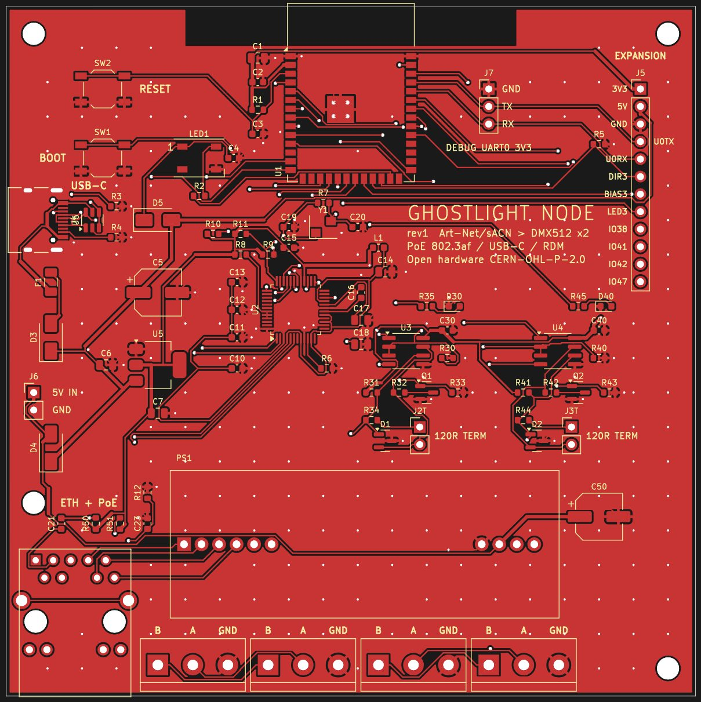
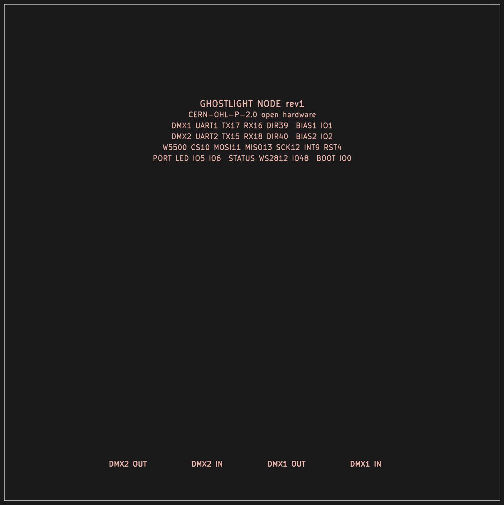

Ghostlight Node
A low-cost, open-source Art-Net / sACN to DMX512 node with PoE and RDM.
Rev 1 · untested prototype
- Repository
- DefeatedWarrior/ghostlight-node
- Hardware licence
- CERN-OHL-P-2.0
- Firmware
- ESP-IDF, MIT
- Tooling
- KiCad 7, Python
- Board
- 100 × 100 mm, 2 layers
Why it exists
A ghost light is the single bulb left burning on an otherwise dark stage. The node does the same quiet job: it keeps the rig alive and listening while nothing else is on. The goal is a DMX node you can build for a small fraction of the cost of commercial units, with every file open.
Specifications
| Protocols | Art-Net, sACN (E1.31), RDM |
| DMX | 2 bidirectional ports, SN65HVD72 transceivers (fail-safe for open, short and idle), TVS protected |
| Per port | IN and OUT 3-pole 5.08 mm terminals in parallel, 120 Ω jumper termination, GPIO-switchable bias |
| MCU | ESP32-S3-WROOM-1-N8 (8 MB flash, no PSRAM) |
| Network | WIZnet W5500 with a HR871150C PoE magjack; Wi-Fi also available on the module |
| Power | 802.3af PoE (SDAPO DP9700-5V, 5 V / 2 A), USB-C, or external 5 V |
| I/O | WS2812B status LED, an LED per port, BOOT / RESET buttons, UART0 debug header |
| Expansion | 12-pin header for a third port or other add-ons |
| Assembly | Designed to be hand-assembled |
The board


Building one
- Order the PCB: send the gerber zip from
fabrication/to a fab (2 layers, 100 × 100 mm, 1.6 mm, HASL lead-free). - Order parts: import
bom/BOM_order_purchase.csvinto LCSC's BOM tool, add about 10% spare passives and check stock. - Assemble by hand using the assembly guide.
- Bring up in order: USB power, 3V3, Ethernet, DMX, then PoE.
- Flash the firmware from
firmware/with ESP-IDF.
Status
Rev 1 is design-complete but has not been manufactured or tested. Treat the first batch as a prototype run and read the known-issues document before ordering. The firmware has not been built or run on hardware yet either.
The most valuable contribution right now is results from a built board: photos, scope captures and what broke. A rev 2 roadmap is in the docs.
Documentation
The repo carries a full numbered documentation set, plus wiki pages and a schematic PDF.
| Build it | Understand it | Use it |
|---|---|---|
| BOM and sourcing | Overview and specs | Firmware integration |
| Ordering guide | Architecture and power | DMX ports |
| Assembly guide | Pin map and connectors | USB and debug |
| Bring-up and test | Ethernet and PoE | Known issues |
| Regenerating the design | PCB design notes | Roadmap / rev 2 |
Credits & licence
Hardware files are CERN-OHL-P-2.0; firmware is MIT. The firmware is adapted from ESP-NODE-2RDM by ThinhCNTT22, with changes for the N8 module (8 MB flash, PSRAM disabled, 8 MB partition table, port LEDs on GPIO5/6).
"Ghostlight Node" has not been trademark-cleared. Art-Net is a trademark of Artistic Licence Engineering Ltd; ESP32 of Espressif Systems; W5500 of WIZnet. Names are used only to describe compatibility.
Documentation
Full documentation, rendered from the repository.
Wiki
- Wiki home
- Getting Started
- Hardware Overview
- Power
- Pin Map
- Connectors
- DMX Ports
- DMX Wiring
- Ethernet and PoE
- Ordering Guide
- Bill of Materials
- Assembly Guide
- Bring-up Checklist
- Firmware
- Using the Node
- Troubleshooting
- Known Issues
- FAQ
- Glossary
- Roadmap
- Contributing
Reference docs
- 1. Overview and specifications
- 2. Architecture and power tree
- 3. Pin map and connectors
- 4. Ethernet and PoE
- 5. DMX / RS-485 ports
- 6. USB, programming and debug
- 7. Bill of materials and sourcing
- 8. Ordering guide
- 9. Assembly guide (hand assembly)
- 10. Bring-up and test plan
- 11. Known issues and verification status
- 12. PCB design notes
- 13. Firmware integration
- 14. Regenerating the design
- 15. Roadmap and ideas for rev2